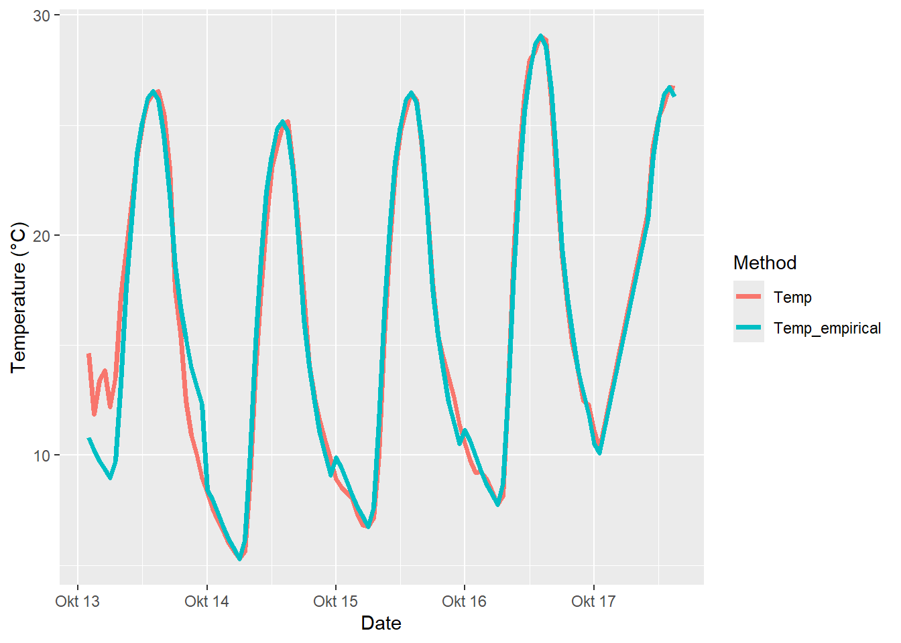

Chapter 8 Making hourly temperatures
8.1 Learning goals
- Understand why we often need hourly temperature data and why we need ways of making them out of daily data
- Understand some basic algorithms for making hourly data from daily minimum and maximum temperatures
- Understand how we can make use of observed hourly temperatures to produce our own empirical transfer function that can make hourly from daily data
- Be able to use the respective
chillRfunctions that implement these steps
8.2 Generating hourly temperatures
With the Chilling Hours function developed, the next challenge arises from the limited availability of hourly temperature data, as most sources provide only daily minimum and maximum temperatures. This limitation complicates the direct calculation of Chilling Hours. Various methods have been employed to address this issue, including relating Chilling Hours to minimum temperatures (Crossa-Raynaud, 1955) or using complex equations.
With better computing tools, some researchers started to assume that daily minimum and maximum temperatures occur at specific times and used linear interpolation for the hours in between, creating a triangular shape for daily temperature patterns (Baldocchi & Wong, 2008).

While assuming a triangular temperature pattern may serve as a rough approximation, it is not entirely realistic. The rate of temperature increase in the morning differs from the rate of decrease in the evening. Additionally, the timing of the lowest daily temperature varies significantly throughout the year, particularly outside of equatorial regions. Therefore, it is important to take these variations into account.
8.3 Idealized daily temperature curves
A major breakthrough in modeling daily temperature curves was made when Dale E. Linvill from Clemson University published a paper in 1990. He combined two mathematical equations: a sine curve to represent warming during the day and a logarithmic decay function for cooling at night. The times for sunrise and sunset defined the transition between these phases, and the length of each phase was linked to the amount of daylight. This method allowed for more accurate daily temperature curves than previous approaches, but not all researchers adopted these equations due to a lack of awareness or data processing skills.
One challenge with Linvill’s equations was their dependence on local sunrise and sunset times. While these can be calculated from observations, having a general method would help researchers. Fortunately, for areas without major geographical features, sunrise and sunset times can be calculated based on solar system geometry. Although agricultural scientists may not be familiar with this, they can use insights from other fields. The chillR package uses equations from Spencer (1971) and Almorox et al. (2005). Prof. Dr. Eike Lüdeling only needed to understand these equations once to code them into an R function for future use.
Bringing together these functions is similar to how the CH() function was developed and used in the sum_CH function, though the components were more complex. The result is a function that can create realistic daily temperature curves based on the latitude of a location. The provided code illustrates how to use the daylength function to create plots showing sunrise time, sunset time, and daylength for Klein-Altendorf (Latitude: 50.4°N) throughout the year:
Days <- daylength(latitude = 50.4, JDay = 1:365)
Days_df <-
data.frame(
JDay = 1:365,
Sunrise = Days$Sunrise,
Sunset = Days$Sunset,
Daylength = Days$Daylength
)
Days_df <- pivot_longer(Days_df, cols = c(Sunrise:Daylength))
ggplot(Days_df, aes(JDay, value)) +
geom_line(lwd = 1.5) +
facet_grid(cols = vars(name)) +
ylab("Time of Day / Daylength (Hours)") +
theme_bw(base_size = 15)
In this context, JDay refers to the Julian Date, which represents the Day of the Year. For example, January 1st is JDay 1, while December 31st is JDay 365 in regular years and JDay 366 in leap years. The ggplot2 package is used for creating attractive plots, and the ideal input for it is a data frame. Therefore, the outputs from the daylength() function were first converted into a data frame. Additionally, the three time series - Sunrise, Sunset, and Daylength - were organized into a stacked format using the pivot_longer command from the tidyr package.
The stack_hourly_temps() function in the chillR package integrates these daily dynamics. This function requires a dataset containing daily minimum and maximum temperatures, specifically with columns labeled Tmin, Tmax, Year, Month, and Day. The latitude of the location must also be provided. Using these inputs, the function applies the previously discussed equations to calculate hourly temperatures, and it can also output sunrise and sunset times if desired.
To demonstrate this process, another dataset included with chillR, called KA_weather, will be used. This data frame contains temperature data from the University of Bonn’s experimental station at Klein-Altendorf. The first 10 rows of the KA_weather dataset will be shown for illustration:
| Year | Month | Day | Tmax | Tmin |
|---|---|---|---|---|
| 1998 | 1 | 1 | 8.2 | 5.1 |
| 1998 | 1 | 2 | 9.1 | 5.0 |
| 1998 | 1 | 3 | 10.4 | 3.3 |
| 1998 | 1 | 4 | 8.4 | 4.5 |
| 1998 | 1 | 5 | 7.7 | 4.5 |
| 1998 | 1 | 6 | 8.1 | 4.4 |
| 1998 | 1 | 7 | 12.0 | 6.9 |
| 1998 | 1 | 8 | 11.2 | 8.6 |
| 1998 | 1 | 9 | 13.9 | 8.5 |
| 1998 | 1 | 10 | 14.5 | 3.6 |
The following process describes how hourly temperatures can be calculated based on the idealized daily temperature curve:
| Year | Month | Day | Tmax | Tmin | JDay | Hour | Temp |
|---|---|---|---|---|---|---|---|
| 1998 | 1 | 5 | 7.7 | 4.5 | 5 | 3 | 4.844164 |
| 1998 | 1 | 5 | 7.7 | 4.5 | 5 | 4 | 4.746566 |
| 1998 | 1 | 5 | 7.7 | 4.5 | 5 | 5 | 4.656244 |
| 1998 | 1 | 5 | 7.7 | 4.5 | 5 | 6 | 4.572187 |
| 1998 | 1 | 5 | 7.7 | 4.5 | 5 | 7 | 4.493583 |
| 1998 | 1 | 5 | 7.7 | 4.5 | 5 | 8 | 4.569464 |
| 1998 | 1 | 5 | 7.7 | 4.5 | 5 | 9 | 5.384001 |
| 1998 | 1 | 5 | 7.7 | 4.5 | 5 | 10 | 6.139939 |
| 1998 | 1 | 5 | 7.7 | 4.5 | 5 | 11 | 6.787169 |
| 1998 | 1 | 5 | 7.7 | 4.5 | 5 | 12 | 7.282787 |
| 1998 | 1 | 5 | 7.7 | 4.5 | 5 | 13 | 7.593939 |
| 1998 | 1 | 5 | 7.7 | 4.5 | 5 | 14 | 7.700000 |
| 1998 | 1 | 5 | 7.7 | 4.5 | 5 | 15 | 7.593939 |
| 1998 | 1 | 5 | 7.7 | 4.5 | 5 | 16 | 7.282787 |
| 1998 | 1 | 5 | 7.7 | 4.5 | 5 | 17 | 6.591821 |
| 1998 | 1 | 5 | 7.7 | 4.5 | 5 | 18 | 6.168074 |
| 1998 | 1 | 5 | 7.7 | 4.5 | 5 | 19 | 5.870570 |
| 1998 | 1 | 5 | 7.7 | 4.5 | 5 | 20 | 5.641106 |
| 1998 | 1 | 5 | 7.7 | 4.5 | 5 | 21 | 5.454280 |
| 1998 | 1 | 5 | 7.7 | 4.5 | 5 | 22 | 5.296704 |
| 1998 | 1 | 5 | 7.7 | 4.5 | 5 | 23 | 5.160445 |
And here’s a plot of the data:

8.4 Empirical daily temperature curves
In some locations, idealized daily temperature curves are ineffective, particularly in areas with rugged topography where temperate fruit trees may be shaded for part of the day. For example, in the Jabal Al Akhdar region of Oman, where Prof. Dr. Eike Lüdeling initially studied winter chill, various oases in the deeply incised Wadi Muaydin canyon were investigated. Trees near the top of the canyon receive significantly more sunlight than those at the bottom, which is about 1000 meters lower.
Even in the absence of mountains, the temperature curve in an orchard may not closely resemble the curve proposed by Linvill (1990) due to its unique microclimate, featuring shaded and sunny spots, dew-covered grass, and bare ground.
In the initial study on Omani oases (Luedeling et al., 2009b), this issue was not adequately addressed. However, a recent revisit to the location aimed to improve this aspect (Buerkert et al., 2020).
To analyze the temperature patterns, a dataset of hourly temperature data for the relevant location is needed, ideally covering an entire year or multiple years. For this exercise, the Winters_hours_gaps dataset from a walnut orchard near Winters, California, will be used, as the temperature logger was directly attached to a tree branch, making it unlikely for the data to exactly match the standard daily temperature curve.
The Empirical_daily_temperature_curve() function will be employed to determine the typical hourly temperature patterns for each month of the year, although this method could potentially be enhanced by allowing for continuous analysis instead of monthly breakdowns.
| Month | Hour | Prediction_coefficient |
|---|---|---|
| 3 | 0 | 0.1774859 |
| 3 | 1 | 0.1550693 |
| 3 | 2 | 0.1285651 |
| 3 | 3 | 0.1145597 |
| 3 | 4 | 0.0696064 |
| 3 | 5 | 0.0339583 |
| 3 | 6 | 0.0000000 |
| 3 | 7 | 0.0313115 |
| 3 | 8 | 0.3121959 |
| 3 | 9 | 0.4953232 |
| 3 | 10 | 0.6819674 |
| 3 | 11 | 0.8227423 |
| 3 | 12 | 0.9506491 |
| 3 | 13 | 0.9662604 |
| 3 | 14 | 0.9915996 |
| 3 | 15 | 1.0000000 |
| 3 | 16 | 0.9490319 |
| 3 | 17 | 0.8483098 |
| 3 | 18 | 0.6864529 |
| 3 | 19 | 0.4945415 |
| 3 | 20 | 0.3636642 |
| 3 | 21 | 0.2972377 |
| 3 | 22 | 0.2360349 |
| 3 | 23 | 0.1794802 |
| 4 | 0 | 0.1960789 |
| 4 | 1 | 0.1407018 |
| 4 | 2 | 0.1283250 |
| 4 | 3 | 0.0819307 |
| 4 | 4 | 0.0541415 |
| 4 | 5 | 0.0188241 |
| 4 | 6 | 0.0000000 |
| 4 | 7 | 0.1697052 |
| 4 | 8 | 0.4442722 |
| 4 | 9 | 0.5939797 |
| 4 | 10 | 0.7363923 |
| 4 | 11 | 0.8399804 |
| 4 | 12 | 0.9245702 |
| 4 | 13 | 0.9770693 |
| 4 | 14 | 0.9963131 |
| 4 | 15 | 1.0000000 |
| 4 | 16 | 0.9568107 |
| 4 | 17 | 0.8698369 |
| 4 | 18 | 0.7343896 |
| 4 | 19 | 0.5330597 |
| 4 | 20 | 0.3941038 |
| 4 | 21 | 0.3186075 |
| 4 | 22 | 0.2594569 |
| 4 | 23 | 0.2114486 |
ggplot(data = empi_curve[1:96, ], aes(Hour, Prediction_coefficient)) +
geom_line(lwd = 1.3,
col = "red") +
facet_grid(rows = vars(Month)) +
xlab("Hour of the day") +
ylab("Prediction coefficient") +
theme_bw(base_size = 15)
The set of coefficients can now be applied to a daily dataset from the same location, allowing for the creation of a reasonable hourly temperature record for the orchard. This is accomplished using the Empirical_hourly_temperatures function, which requires a set of hourly coefficients and a daily temperature record that includes Tmin and Tmax columns.
Additionally, the ? operator can be used to access help on how to use any function, such as ?Empirical_hourly_temperatures.
The process also involves using the make_all_day_table function, which fills gaps in daily or hourly temperature records and summarizes hourly data into daily minimum and maximum temperatures.
coeffs <- Empirical_daily_temperature_curve(Winters_hours_gaps)
Winters_daily <-
make_all_day_table(Winters_hours_gaps, input_timestep = "hour")
Winters_hours <- Empirical_hourly_temperatures(Winters_daily, coeffs)The next step is to plot the results to visualize the hourly temperature data. This allows for a comparison between the results from the empirical method, the triangular function, and the idealized temperature curve. Additionally, actual observed temperatures will be used to validate the results. To facilitate this process, the data will first be simplified for easier handling:
Winters_hours <- Winters_hours[, c("Year", "Month", "Day", "Hour", "Temp")]
colnames(Winters_hours)[ncol(Winters_hours)] <- "Temp_empirical"
Winters_ideal <-
stack_hourly_temps(Winters_daily, latitude = 38.5)$hourtemps
Winters_ideal <- Winters_ideal[, c("Year", "Month", "Day", "Hour", "Temp")]
colnames(Winters_ideal)[ncol(Winters_ideal)] <- "Temp_ideal"The next step involves creating the ‘triangular’ dataset. Understanding the process behind this construction is essential.
Winters_triangle <- Winters_daily
Winters_triangle[, "Hour"] <- 0
Winters_triangle$Hour[nrow(Winters_triangle)] <- 23
Winters_triangle[, "Temp"] <- 0
Winters_triangle <-
make_all_day_table(Winters_triangle, timestep = "hour")
colnames(Winters_triangle)[ncol(Winters_triangle)] <-
"Temp_triangular"
# with the following loop, we fill in the daily Tmin and Tmax values for every
# hour of the dataset
for (i in 2:nrow(Winters_triangle))
{
if (is.na(Winters_triangle$Tmin[i]))
Winters_triangle$Tmin[i] <- Winters_triangle$Tmin[i - 1]
if (is.na(Winters_triangle$Tmax[i]))
Winters_triangle$Tmax[i] <- Winters_triangle$Tmax[i - 1]
}
Winters_triangle$Temp_triangular <- NA
# now we assign the daily Tmin value to the 6th hour of every day
Winters_triangle$Temp_triangular[which(Winters_triangle$Hour == 6)] <-
Winters_triangle$Tmin[which(Winters_triangle$Hour == 6)]
# we also assign the daily Tmax value to the 18th hour of every day
Winters_triangle$Temp_triangular[which(Winters_triangle$Hour == 18)] <-
Winters_triangle$Tmax[which(Winters_triangle$Hour == 18)]
# in the following step, we use the chillR function "interpolate_gaps"
# to fill in all the gaps in the hourly record with straight lines
Winters_triangle$Temp_triangular <-
interpolate_gaps(Winters_triangle$Temp_triangular)$interp
Winters_triangle <-
Winters_triangle[, c("Year", "Month", "Day", "Hour", "Temp_triangular")]The next step is to merge all the data frames to facilitate easier display and comparison of the datasets.
Winters_temps <-
merge(Winters_hours_gaps,
Winters_hours,
by = c("Year", "Month", "Day", "Hour"))
Winters_temps <-
merge(Winters_temps,
Winters_triangle,
by = c("Year", "Month", "Day", "Hour"))
Winters_temps <-
merge(Winters_temps,
Winters_ideal,
by = c("Year", "Month", "Day", "Hour"))The dataset now includes observed temperatures along with the three approximations: triangular, idealized curve, and empirical curve. To plot this data effectively, the Year, Month, Day, and Hour columns will be converted into R’s date format using ISOdate, and the data frame will be reorganized for better usability.
Winters_temps[, "DATE"] <-
ISOdate(Winters_temps$Year,
Winters_temps$Month,
Winters_temps$Day,
Winters_temps$Hour)
Winters_temps_to_plot <-
Winters_temps[, c("DATE",
"Temp",
"Temp_empirical",
"Temp_triangular",
"Temp_ideal")]
Winters_temps_to_plot <- Winters_temps_to_plot[100:200, ]
Winters_temps_to_plot <- pivot_longer(Winters_temps_to_plot, cols=Temp:Temp_ideal)
colnames(Winters_temps_to_plot) <- c("DATE", "Method", "Temperature")
ggplot(data = Winters_temps_to_plot, aes(DATE, Temperature, colour = Method)) +
geom_line(lwd = 1.3) + ylab("Temperature (°C)") + xlab("Date")
The plot indicates that the triangular curve deviates significantly from the observed data, while the Temp_empirical and Temp_ideal curves appear quite similar and are difficult to differentiate.
To compare these curves more thoroughly, the Root Mean Square Error (RMSE) can be calculated, as it is useful for quantifying the alignment between predicted and observed values. The chillR package includes a function to perform this calculation.
# here's the RMSE for the triangular method:
RMSEP(Winters_temps$Temp_triangular, Winters_temps$Temp)## [1] 4.695289# here's the RMSE for the idealized-curve method:
RMSEP(Winters_temps$Temp_ideal, Winters_temps$Temp)## [1] 1.630714# and here's the RMSE for the empirical-curve method:
RMSEP(Winters_temps$Temp_empirical, Winters_temps$Temp)## [1] 1.410625The results show an RMSE of 4.7 for the triangular method, 1.63 for the idealized curve method, and 1.41 for the empirical curve method. Since a lower RMSE indicates better accuracy, these results demonstrate that calibrating the prediction function with observed hourly data significantly improves accuracy, especially compared to the triangular method.
While it might be questioned how much this affects chill accumulation modeling, it is often found to make a considerable difference.
8.5 Exercises on hourly temperatures
- Choose a location of interest, find out its latitude and produce plots of daily sunrise, sunset and daylength.
The Yakima Valley in Washington State, USA, is located at about 46.6° N latitude. This region has a continental climate with cold winters and hot, dry summers, creating ideal conditions for growing fruit trees. The valley is well known for producing a variety of fruits, including apples, cherries, pears, and grapes, which benefit from its distinct seasonal changes. Using the daylength() function, you could create plots showing daily sunrise, sunset, and day length times.
Yakima <- daylength(latitude = 46.6, JDay = 1:365)
Yakima_df <-
data.frame(
JDay = 1:365,
Sunrise = Yakima$Sunrise,
Sunset = Yakima$Sunset,
Daylength = Yakima$Daylength
)
Yakima_df_longer <- pivot_longer(Yakima_df, cols = c(Sunrise:Daylength))
ggplot(Yakima_df_longer, aes(JDay, value)) +
geom_line(lwd = 1.5) +
facet_grid(cols = vars(name)) +
ylab("Time of Day / Daylength (Hours)") +
theme_bw(base_size = 15)
- Produce an hourly dataset, based on idealized daily curves, for the
KA_weatherdataset (included inchillR)
Based on idealized daily curves, the hourly dataset for Julian Day 6 (January 6th) is shown below:
| Year | Month | Day | Tmax | Tmin | JDay | Hour | Temp |
|---|---|---|---|---|---|---|---|
| 1998 | 1 | 6 | 8.1 | 4.4 | 6 | 0 | 4.990741 |
| 1998 | 1 | 6 | 8.1 | 4.4 | 6 | 1 | 4.881232 |
| 1998 | 1 | 6 | 8.1 | 4.4 | 6 | 2 | 4.782253 |
| 1998 | 1 | 6 | 8.1 | 4.4 | 6 | 3 | 4.691956 |
| 1998 | 1 | 6 | 8.1 | 4.4 | 6 | 4 | 4.608939 |
| 1998 | 1 | 6 | 8.1 | 4.4 | 6 | 5 | 4.532117 |
| 1998 | 1 | 6 | 8.1 | 4.4 | 6 | 6 | 4.460628 |
| 1998 | 1 | 6 | 8.1 | 4.4 | 6 | 7 | 4.393780 |
| 1998 | 1 | 6 | 8.1 | 4.4 | 6 | 8 | 4.491337 |
| 1998 | 1 | 6 | 8.1 | 4.4 | 6 | 9 | 5.430950 |
| 1998 | 1 | 6 | 8.1 | 4.4 | 6 | 10 | 6.302486 |
| 1998 | 1 | 6 | 8.1 | 4.4 | 6 | 11 | 7.048391 |
| 1998 | 1 | 6 | 8.1 | 4.4 | 6 | 12 | 7.619410 |
| 1998 | 1 | 6 | 8.1 | 4.4 | 6 | 13 | 7.977836 |
| 1998 | 1 | 6 | 8.1 | 4.4 | 6 | 14 | 8.100000 |
| 1998 | 1 | 6 | 8.1 | 4.4 | 6 | 15 | 7.977836 |
| 1998 | 1 | 6 | 8.1 | 4.4 | 6 | 16 | 7.619410 |
| 1998 | 1 | 6 | 8.1 | 4.4 | 6 | 17 | 7.419674 |
| 1998 | 1 | 6 | 8.1 | 4.4 | 6 | 18 | 7.318918 |
| 1998 | 1 | 6 | 8.1 | 4.4 | 6 | 19 | 7.248287 |
| 1998 | 1 | 6 | 8.1 | 4.4 | 6 | 20 | 7.193854 |
| 1998 | 1 | 6 | 8.1 | 4.4 | 6 | 21 | 7.149557 |
| 1998 | 1 | 6 | 8.1 | 4.4 | 6 | 22 | 7.112208 |
| 1998 | 1 | 6 | 8.1 | 4.4 | 6 | 23 | 7.079920 |
- Produce empirical temperature curve parameters for the
Winters_hours_gapsdataset, and use them to predict hourly values from daily temperatures (this is very similar to the example above, but please make sure you understand what’s going on).
# Generating empirical daily temperature curve from observed hourly data
empi_curve <- Empirical_daily_temperature_curve(Winters_hours_gaps)
# Filling gaps in daily or hourly temperature data
Winters_daily <- make_all_day_table(Winters_hours_gaps, input_timestep = "hour")
# Using empirical coefficients to predict hourly temperatures based on daily temperatures
Winters_hours <- Empirical_hourly_temperatures(Winters_daily, empi_curve)
# Make an empirical dataset
Winters_hours <- Winters_hours[, c("Year", "Month", "Day", "Hour", "Temp")]
colnames(Winters_hours)[ncol(Winters_hours)] <- "Temp_empirical"
# Merge data frames
Winters_temps <-
merge(Winters_hours_gaps,
Winters_hours,
by = c("Year", "Month", "Day", "Hour"))# Covert Year, Month, Day and Hour columns into R's date formate and reorganizing the data frame
Winters_temps[, "DATE"] <-
ISOdate(Winters_temps$Year,
Winters_temps$Month,
Winters_temps$Day,
Winters_temps$Hour)
Winters_temps_to_plot <-
Winters_temps[, c("DATE",
"Temp",
"Temp_empirical")]
Winters_temps_to_plot <- Winters_temps_to_plot[100:200, ]
Winters_temps_to_plot <- pivot_longer(Winters_temps_to_plot, cols=Temp:Temp_empirical)
colnames(Winters_temps_to_plot) <- c("DATE", "Method", "Temperature")
ggplot(data = Winters_temps_to_plot, aes(DATE, Temperature, colour = Method)) +
geom_line(lwd = 1.3) + ylab("Temperature (°C)") + xlab("Date")